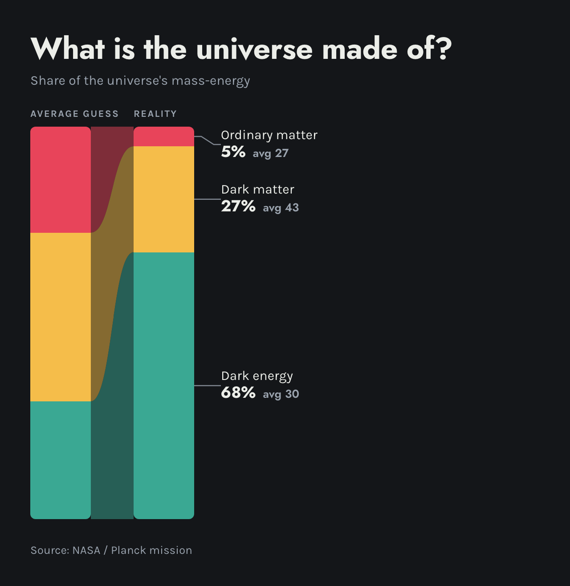
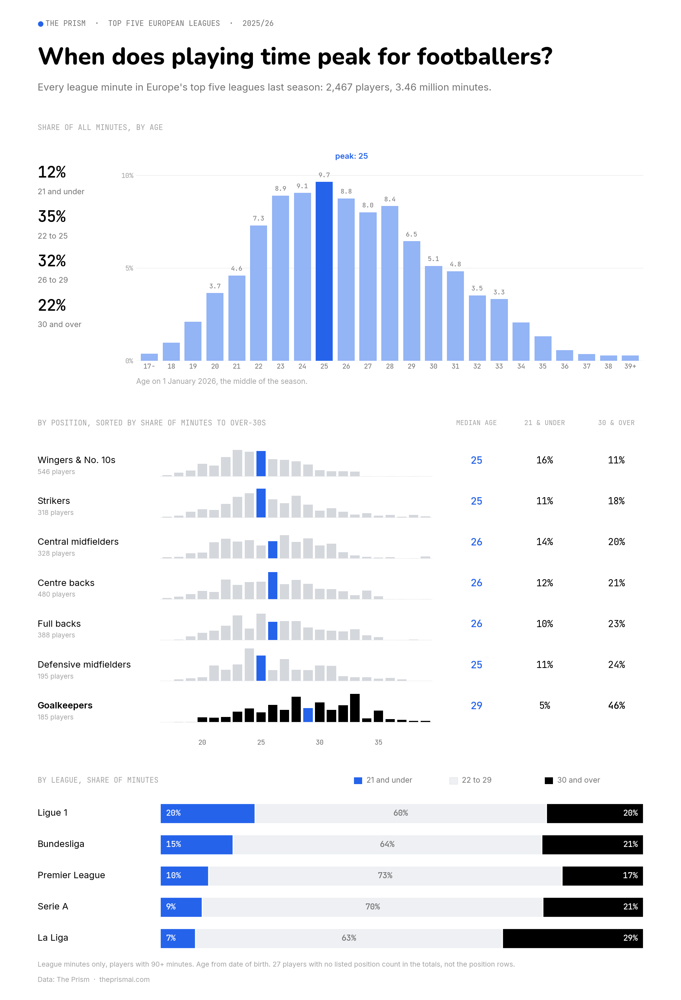
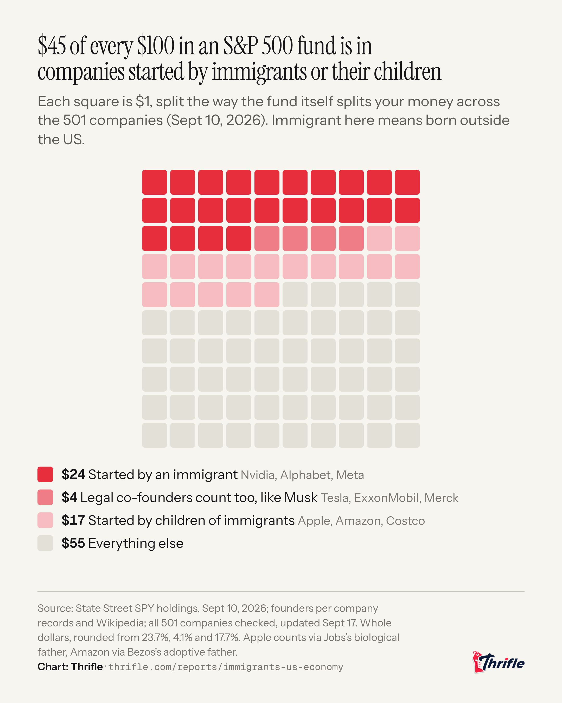
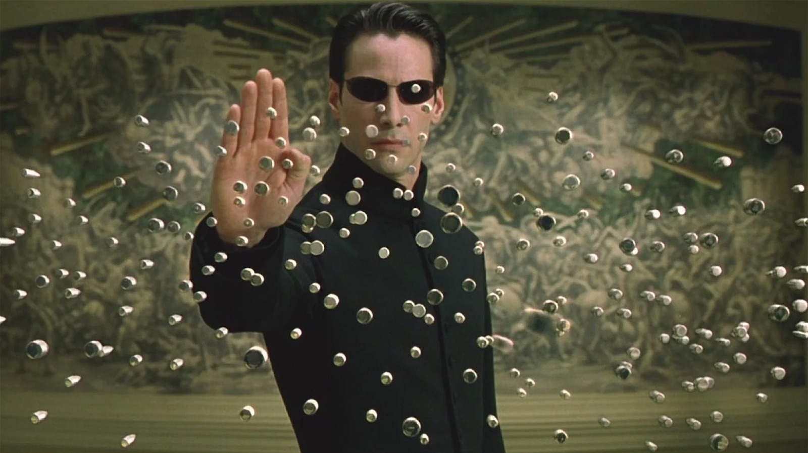

Reflections
09/20/26 - 09/26/26
This is the second full week in this new chapter. Digital humanities have made me think outside the scope of technology itself. On monday I fought with the question "What form is data". In my opinion form that is data is anything really.
Anything that has a "form" is data, physical or not. Anything that you see can be used as data. We also talked about how computers work, which to it's simplest concept is little small transistors that represent on or off in forms of binary 0's and 1's.
On Wednesday we had a guest speaker in Sarah Immel. She is currently in Scotland studying LLM's and the impact they have in writing. You can see more of my reflection on her in my guest speakers tab!
On Friday we had our first round of DH explorations. We had Sydney and Zach present their explorations. Sydney's project was all about star trek and the impact it has had on modern technology. It was super cool. I have never seen star trek but it makes
me want to watch it now. Zach in the other hand did his exploration on medical tech and the impact it has had though the years. Let's just say, there is a lot of data in the medical field and it has truly changed the way we store all of it. We argued about the question
of AI in medicine and who would be liable in a situation where doctor's rely on AI to do their work, which is pretty scary. Overall it was a fun week and learn't more about data and how it basically runs our world.
09/27/26 - 10/03/26
Community Building Week!
This week was all focused on building a project for The Lands Council, a non profit organization here in Spokane. They preserve and revitalize Inland Northwest forests, water, and wildlife through advocacy, education, effective action, and community engagement.
We were tasked to help them build something that would help them, we were added in groups and started working right away. The week felt so long but ultimately
we got through it. My group, team12 or Green Spokane made an app using react native and the whole week we struggled, persevered, and struggled again, but at the end we made something we were all proud of.
09/04/26 -
Guest Speakers
Sarah Immel
09/23/26
Sarah, a graduate from Whitworth was our guest speaker today, she is currently living in scotland getting her phd. She is an english guru and is working on the impact AI has on writing these days. Do we need human writers now? That is one question that kept popping up in my head.
AI has taken over everything in our daily lives even the writing we see. I know when I am posting something on my Ebay page it automatically detects what the title is and writes a whole description of my product without me having to do it.
It has been nice but sometimes I will edit it since it will give me a too perfect description like the item I am selling is brand new, which sometimes it is not. This implies that AI thinks everything is perfect in my opinion which is not, even perfect things have it's defects
and AI does not understand that, yet, or will it even? I do think AI writing has a place in this world but in very small tasks that do not require human emotions, like a description but only if you tell it exactly what it is, but even then
if you are describing it to an AI, might as well just describe it yourself.
Sarah had this thought that she mentioned that really made me think. How can humanity knowledge steer the future of tech instead of just "computer people". Which made me realize that is mostly the case in any digital aspect. Someone that knows how to build something just builds it
without having talked to a human or see the "ordinary humans emotions" in mind when building something.
When asked about data, Sarah had an interesting definition. "Anything we create as information that we create to compare other information" for example data is not just sitting there, someone had to record it, so she is implying that someone had to record something in order to become data.
My definition is anything, data is anything, but I never realized that, that anything has to be recorded first, like how a table is just a table but if someone measures it, it becomes data to understand it better.
Overall our conversation with Sarah actually expanded my mind in other ways I see data in my life. Data is something that I recently started to think about and it is very interesting how different people think of it. In her own words "the things that would be more valuable is the uniqueness of oneself".
Reddit Research
r/dataisbeautiful/moneySpentOnDataCenters
See post here.As I scroll through the subreddit, data is beautiful I stop and think of why data exists in the first place.
Data is everywhere, if you really think about it, so is data the universe? Without data would we still be alive?
Interesting question. Scrolling I have found this posts that examines the money spent in data centers throughout the years. This post is interesting to me
because my friend actually works in one and when he got hired a few years ago I was surprised how quickly he got on the team with no prior IT or tech experience, no hate to him
he loves his job but it was interesting to see how much this sector would quickly grow in the next 3 years after he got hired which showed how much people are needed. Data centers are particular interesting to me as well because
the amount of power it takes to run one is crazy! But we need them if we want to keep growing our use of tech in a way.
You can see where the chart absolutely explodes up, the release of ChatGPT, an AI chatbot where you can get help with almost anything on the internet. If it was ever recorded, you can probably get it through this. I remember when I
first heard about it, I didn't want to use it because I thought I would get stupider, and I didn't use it for the next 2 years. I was doing everything by my own research and brain. But when Google Gemini came out, I didn't even know I was using
AI until I realized all my Google searches were actually coming from AI in a way. Even if I didn't use it, it has been a huge part of my life now, a quick Google search, well, AI is helping; talking to my Alexa, AI is helping me; trying to calculate something fast, AI is helping me.
I got sucked into the world of AI like a lot of people, now it is just a part of our daily lives. In a way I feel smarter because of it, all the information I want to seek, I have a companion with me. Obviously you need to think for yourself, and I will always advocate for that, but we
live in a world where we can all have personal assistants no matter what our social class is. Though I am really against AI art!!! BAN AI ART. Every time I see a flyer or poster done with AI I get this sense of disgust, like I will not be attending that event or place because you just generated
it on ChatGPT and sure maybe they don't have time or money to spend on a flyer but that just shows how much you care.
This article was written by Edouard Mathieu, Head of Data and Research at OurWorldinData.com
This representation of data impacts my engagement by seeing the immense growth spur of money being spent in this sector if I were to do the same thing I would make a graph chart showing the particular year and money spent. Overall
this is where our world is headed if we want to grow our technology use which means a trade off for our environment, which then the question arises, are we moving backwards?

r/dataisbeautiful/whatIsOurUniverseMadeOf
See post here. When I think of the Universe I think of an endless amount off darkness just miles and miles of nothing. This post caught my eye because if I would be asked this question I would probably say
that the universe is mostly made of dark matter which is basically just, actually I am not sure what it is to be honest, it is just this invisible type of matter that we still a hard time knowing what it actually is.
The universe has always fascinated me. I wanted to be an astronaut as a kid, I would watch space videos all night because I thought it was so cool, and I still think it is, I just lost interest in actually being an astronaut these days.
This data is kind of misleading because at the bottom it says it was from Nasa but in reality as I looked into it deeper the person who posted this just asked friends and family, 53 people to be exact. As soon as I discovered this it made sense.
I don't think majority of human beings or at least know what the universe might be made of. If I was asked as a kid I would just say night or dark. The representation of this data impacts my engagement by having a nice looking graph and not so many information
that my eyes quickly know what is going on. If I had to do this differently I would simply just make a graph chart of some sorts and have more thoughts of what the universe might be not just those 3 options. It looks like maybe there were only 3 options to choose
from, from the start and the people he asked just had to give a percentage. Oh well, not the cleanest but for those 53 people he asked we can see a big difference of what they thought to what actually is correct.

r/dataisbeautiful/footballAgePeak
See post here.When I was kid I loved to play soccer, thats how I got into running. My senior year of high school I wanted to be better at soccer so I joined the cross country team. I ended up ditching soccer for track that same year. I was 17 at the time. These days a lot more 17 year
olds are going pro at soccer compared to any other age in time. Which is super interesting to me and the age one peaks not just in soccer but in athletic sports. In running the male athlete usually peaks in the mid 30's some even late 30's while in soccer this data is showing
that when you are 25, you will peak in playing minutes which you can interpret that as ones prime.
This data came from every player who played at least 90 league minutes in the Premier League, La Liga, Serie A, Bundesliga or Ligue 1 last season, which are the top 5 leagues in Europe and one might say in the world. This data impacts my engagement by making me stop and think that
athletes really have just a few years compared to a lifetime where they can excel in their respective sport. Knowing this it makes me think about my personal athletic goals and making them that much bigger, since I know I have a limited time before I go downhill and my knees don't work
as best as they can.
Another interesting thing about this is that goalies actually play longer the older they get which is pretty cool to see. I interpret this as the more older you are the more experience you get on where to stand or know where the balls are coming from compared to that of a young goalie.
We can also see that La Liga which is Spain's first division league only gave 7% of minutes to those younger than 21 while the French league Ligue 1 gave almost over 20% which makes me think that one values the development of young players more than the other.
Overall this is the most interesting data I have come across with and I really enjoyed looking at this. If I had to this differently I don't think I would know where to start. I would be curious to see how all the leagues in the world would say not just the top 5. I know once footballers get older
they tend to move to "lower" leagues so the data might be interesting to see. I really enjoyed this one

r/dataisbeautiful/ImmigrantsAndTheS&P500
See post here. As a child of immigrant parents from Mexico I really resonated with this data. I came to the US when I was 6 months old and have lived here since. I have a work permit which allows me to work and go to school and even invest in the stock market!
I started investing a few years ago and grew my portfolio to a decent amount. Now I am using these funds to help pay for my college which in turn takes a little stress off my shoulders knowing I can focus on running and school without having to stress about finances in a way.
I think investing is the coolest thing a person can do, you can invest in a lot places or even in yourself to that matter.
This data shows how much of the money you invest goes to companies that were started by immigrants or immigrant children and as we can see it is almost half of the S&P500 which are the top 500 companies in the USA.
One can say that some of these are the biggest companies in the US, like Google, Apple, and Meta. Data from this chart came from an individual person looking through the SPY's database and made there own chart. If I were to do this, I would add a lot more things, like where did they come from or
where did their parents came from. I do think this data is misleading as sometimes companies have multiple founders, so who were counted on this? Over all this impacts my engagement by having more of a personal connection with these findings. It makes me appreciate where I came from and even motivates me to know
that I can have a company someday that people will invest their money too and contribute to this country the way it has helped me.

Narratives
The Matrix
"What are you trying to tell me? That I can dodge bullets? "No, Neo... I'm trying to tell you that when you're ready... You won't have to.." and then later in the movie he stops the bullets mid air and they just fall to the ground. As a kid I thought that was the coolest thing ever and I still think that today.
I was sitting in the couch and each Saturday night after the soccer games Telemundo (Spanish Cable Channel) would play a movie. My dad had fallen asleep and my mom was out with her brother. Trinity out running the cops (the opening scene) starts playing and I am hooked instantly. Dark, late at night, nothing playing but the tv
and my 8 year old self seeing something I hadn't seen ever, apart from cartoons right in front of me. That whole night something in my brain shifted. That whole movie It felt like I actually started thinking, like I had never thought before until then. After the movie ended I was kind of scared, amused, inlighted, this weird feeling crawling up my skin,
like everything I had known was a lie. I didn't even notice my dad leave the room. I had never seen something like that.
The matrix is one or might be my favorite movie of all time, the way the oracle tells Neo that he doesn't have to believe what she tells him really speaks to me. So many times in my life I have been told what I can or cannot do but at the end of the day it is up to me to decide that. In a personal level hispanic culture
sees cross country as a rich white people sport (which is kind of true, not really) but being the only hispanic person out in the course makes me want to succeed even more and prove that I can be just as fast or even faster.
Data is used in a lot ways in this movie. The most popular has to be the use of the green code (you can see it in the background of this post) it shows up all throughout the movie representing the "Matrix" which is the computer world, and this holds all the data of basically everyone living in it, or the world itself like the buildings and structures etc.
The form of this narrative impacts and impacted me in a way that I could understand. As an 8 year old I couldn't speak or read english so if this was a book to say I would have never read it at that time and had the same impact as it did. In the other hand being in a movie format meant all I had to do is just watch, it was also in spanish which helped me understand
what was going on. If it were any different I don't think I would be writing about it right now, instead I would be talking about Power Rangers.

Power Rangers
Everything we do now is shaped how we grew up. Everything we think now is how our thought system came to be growing up. Everything that we watched or did as kids shaped us to who we would become as adults.
Growing up my favorite cartoon was that of Power Rangers, any really. Every year this series would get new seasons, and with every season there would be a new theme, for example dinosaurs, cops, space, cars, jungle etc. The main concept was that some
5 ordinary teens would summon the power or the rangers to help protect the world from evil aliens that wanted to get these powers that were usually in form of a stone, crystal, or sword. I don't really remember when was the first time I saw this series but I do remember being in the 1st grade, recess time, and thinking "if I was a
power ranger I can save all my classmates from evil".
Swords, cool swords, sometimes made out of dinosaurs or a cool white feather is what fascinated me watching this. The evil counterparts also looked super weird in a cool way. Every new evil character was different and looked super unique, not to mention the rangers themselves.
Usually the same 5 colors, red, blue, yellow, green, and pink, sometimes white or black (which were my favorite). My favorite series to this day is Power Rangers Dino Thunder! The white ranger in dino thunder has to be my favorite ranger of all time. Son of the Mezagog (the evil villain in that series) he became a ranger but was cursed with an evil spirit
and wanted to wipe out the rangers but later became good because of them, also his red eyes and his sword are the coolest things ever!
As an adult now, I look back to when I used to watch this and think of how badly I wanted to become a ranger, because in a way I have become one. I don't have fancy swords, but I do have skills or hobbies that make me feel amazing. I don't find aliens but I do fight my thoughts and actions everyday to try and better myself.
I have gathered everything I learn't from watching this to my own life, in my own way.
Data is used in this series in the form of their morphers (usually a bracelet that makes them turn into rangers, sometimes phones they have to call, or even belt buckles). These morphers have their powers stored in them in a way, and depending what ranger you are you will get that unique set of powers. Another way data is used here
is the way they store the rangers information, for example in the very first power rangers, Power rangers Mighty Morphin Alpha 5 (the command center assistant) manages technical diagnostics, analyzes monster energy signatures, and monitors the morphing grid. Alpha 5 calls the rangers when there is trouble and tells them where to go.
The form this narrative is deployed worked well with me as a kid, I would also read power rangers books and even color coloring books growing up. If they had to change the way they told this narrative I would change the amount of different seasons and just kept like 5 or 6 to go on for a few seasons instead of having a whole different
concept every time. I remember it lost me once a season came out that I didn't really resonated with because their outfits were not that cool and after that I don't know how long it was until I watched again. Overall Power Rangers had a huge impact on me growing up and it still does today, every time I wake up I see my white ranger action
figure and think "it's time to be evil today, in a good way..."